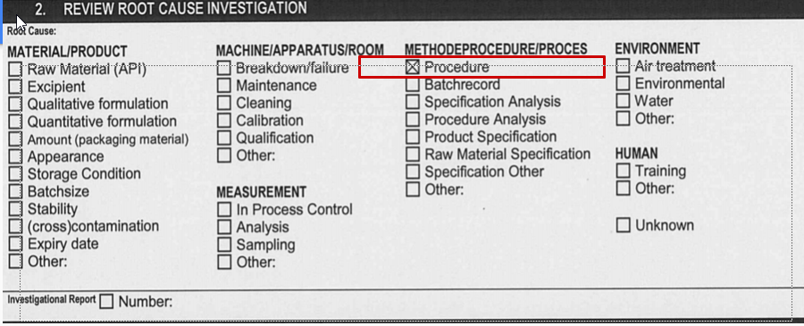
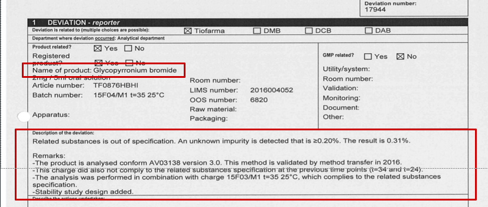
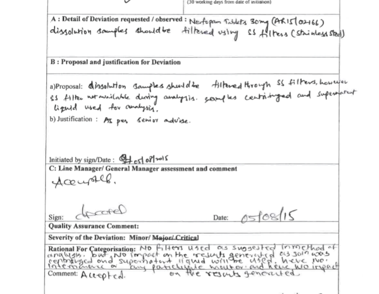
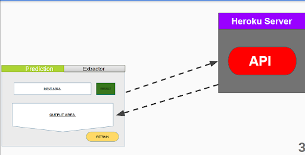

Machine error Analysis
Innovation
In the above image we can see comparison between our system and the current method of detecting deviations. Two parametres are compared are time and man power. Our model takes less than 1 minute to provide predictions compared to the 1 month and only 1 person to operate the system.
Final Dot Net Gui

Project Goal
The project aims at developing an AI model that identifies the root causes of problems caused in the machine and provides corrective actions.
About Our Clients
Fransha Pharma LLP is a global regulatory and technical service provider for the pharmaceutical, biopharmaceutical, healthcare and medical device industry.whose goal is finding the best solution for their clients. One of the challenges they face is the time and resources spent in detecting machine/ root causes. In this project we aim to build an ml system which helps automate the deviation analysis process.
Problem Statement
Given a deviation predict the root cause/s
What is Deviation ?
Any product which has deviated from its desired result and produces unknown or unwanted results is said to have been deviated from the actual goal hence the name deviation. Consider the above figure in which we are assigned the task of manufacturing a tablet. The tablet is made up of three chemicals, chemical A,B,C. which need to be added in proper concentrations 10% of A and B and 15% C. But due to some error called as root cause we deviate and add 10% C. As a result of this error the final product deviates from the intended product. Now our job is to detect this error and prevent it in the future so such a deviation does not occur again. In this project we need to build an AI system which helps detect such errors also termed as root causes. The below figure showsn all possiable root causes we need to detect. For the above example one of the possible root causes might be procedure . A single input can have multiple root causes hence this is a multilabel problem.
Requirements and My Role
Requirments:
- Given the deviation see if its possiable to develope a ML system which can detect root causes with acceptable probability.
- The final gui needs to be created using the .Net MVC Framework.
Implementation Details
About the Data
In this section will discuss the input and the output and the way we prepared out dataset in brief
Output:
Before looking at the input data lets take a look at the ouptut and understant the problem.Below is the image of the all the possiable root causes. Our problem is a multilabel problem where the model can predict one or n of such root causes. There are 6 main categories of root causes and they have all have distinct root causes there are 42 distinct root causes (except other which was not considered as it doesn't convey any information).
Preparing the Input Data
The input to the model is text data (refer to the image above )which comes more the deviation forms provided by our clients. From the above image the area highlighed in read will be our models input but first we needed to extract the text from the forms which are all in pdf format. We were given deviation forms from 9 different companies.In the above figure we can see the unstructured / unorganized data which was provided to us. These folders along with the deviation forms were mixed with other documents which we had to remove. A big problem we faced and the reason we didn't use a OCR system was that the deviation forms were documented by different companies and each company had a different format for recording their data. Some were digitally recorded and visually understandable while others were hand written, and difficult to understand. Below I have porvided two images from different companies we had 100 of such deviation forms mixed with other data.
deviation form exmaple 1
deviation form exmaple 2
To deal with this problem we created an data extractor application in dot net. This application was later added to the final .Net application and with this we had a complete pipeline which collect data/store data , re-train the model and do prediction.
Image of the software used to extract / convert the data from pdf to csv. Since the size of our model was small we decided to include the data extractor in our final ml system.The extractor application provides an easy and standardized way to store data.
Model Selection
For model there were two things I had to consider the training time of the model and the memory requirments as the final model would be hosted on a server. The size of your dataset was fairly small so we could test the models training time and memory consumption so we used different larger datasets of the same type eg. (multilabel problems) we went for stackoverflow tag prediction dataset containing 80,000 samples. The models we considered are SVM , Multinomial Naive Bayes, Logistic Regression , SGDClassifier since this problem is differnt form binary and multiclass we had to use training stratigies to traing our models or find algorithms which could hangle multilabel targets. Training stratigies include power transform and emsemble methods (OvR),we also used adoptive algorithems The training time and the memory requirments were to large for othe the power transforms and the adoptive algorithms which could not be trained even in coab. We selected the OneVsRest Classifier with the SGDClassifier. The main reason we went for SGD was because it supported the partial_fit() method which allows us to re-train the model on only a batch of data instead on the entire dataset saving time. The other reason was the different loss functions supported by SGD which allows it to act like a logistic regression or SVM depeding on the loss function value.
Rest Api
The api hosted on heroku supports three routes
- Predict: for prediction
- Re-train Soft: Just train the model and send the score but doesnt store the new data
- Re-train Hard: Re-trains the model and add the new samples to the existing samples.